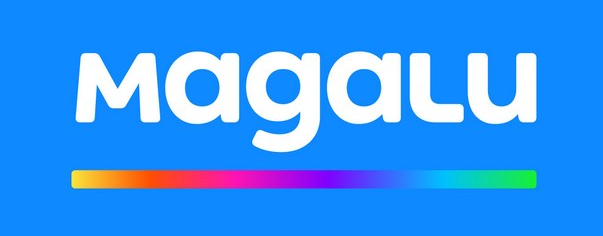

Melhor placas de vídeo

- Razer Huntsman Tournament — Experiência máxima em velocidade
- Corsair K70 Rapidfire — Teclado robusto com ótimo custo-benefício
- Logitech G213 Prodigy — Teclado de membrana ágil
- HyperX Alloy FPS — Acabamento de metal e cabo revestido
- Logitech G613 — A praticidade de jogar sem fios
- Razer Ornata Chroma — Teclado semi-mecânico
- Corsair Strafe RGB MK.2 — Teclado mecânico silencioso
- Razer Blackwidow V3 — Escolha entre precisão ou conforto
- Redragon Kumara K552 — Variedade de opções de switches
- Logitech G413 Carbon — Teclado mecânico básico
Se você está fugindo de teclados comuns ou quer aprimorar sua experiência para ser mais competitivo em disputas online, é essencial ter bons acessórios para isso, e o teclado é uma parte fundamental para jogar.
Nos teclados mecânicos é bom ficar de olho na cor dos switches. O vermelho é voltado para gamers que passam várias horas jogando, por ser mais confortável. Já se curte precisão para evitar toques acidentais, vai preferir teclados com switch azul, porém este é o mais barulhento. Se quer um meio-termo, então switch na cor marrom seria o ideal. Já se velocidade é mais importante, vá de preto.
Nossa lista busca reunir modelos mais acessíveis que apenas entregam uma boa experiência, assim como modelos mais robustos que trazem tecnologias mais avançadas e diversos atalhos para dar aquela vantagem em competições mais acirradas.
Os modelos serão organizados por preço, mas deixaremos claro o destaque de cada um e as vantagens de se investir em um modelo mais caro. Como os preços mudam com frequência, nem sempre os produtos listados estarão ordenados por preço perfeitamente.

Ainda não quer investir em teclado mecânico, mas também não está mais contente com os teclados convencionais? Este é do tipo membrana e tem como grande destaque oferecer velocidade de resposta quatro vezes superior.
Ele traz iluminação RGB, e não apenas LED comum que apresenta uma cor fixa. Há teclas de multimídia no topo para fácil acesso, mas seu grande destaque fica para a maior resistência a respingos. Perder um teclado caro por ter derramado algum líquido não é nada bacana.
O software da Logitech permite a customização da iluminação, assim como definir as teclas macros — já que o produto não possui teclas dedicadas para isso.
Ele tem função anti-ghosting, que, no entanto, não é 100%. Ele consegue apenas impedir o travamento se você apertar no máximo 13 teclas de uma vez. Além disso, ele não vem no padrão brasileiro como outros que listamos.



Redragon é uma empresa que investe em produtos gamer e compete com marcas mais conhecidas como Logitech, Razer, HyperX e Corsair. Ela tem o diferencial de entregar bons produtos cobrando mais barato, por isso incluímos no nosso guia o teclado Kumara.
A Redragon oferece várias opções de switch com seus teclados e no Kumara não é diferente. Você pode escolher modelo com switch azul, vermelho ou marrom. Até mesmo há duas opções de cores do teclado, incluindo uma branca. O que é raro, já que normalmente teclados gamer são pretos.
Ele também possui teclas para controle multimídia, sistema anti-ghosting e retroiluminação vermelha. Ele é mais compacto que os demais modelos abaixo e vem no padrão ABNT, para quem faz questão de ter a tecla dedicada para o Ç.

Quer entrar no mundo dos teclados mecânicos, mas não está pronto para investir em um modelo caro mais profissional? Que tal o G413 Carbon da Logitech? Ele é um teclado básico que traz switches desenvolvidos pela própria marca, e que recebem o nome de Romer G.
A marca garante que o seu switch é 25% mais rápido e 40% mais durável que o de um teclado mecânico convencional. Além disso, o G413 Carbon conta com 12 teclas substituíveis para dar uma turbinada na experiência gamer.
Se é fã de customizar a iluminação do teclado, pode ficar um pouco decepcionado com o G413. Ele tem iluminação apenas na cor vermelha, diferente dos modelos mais caros do nosso guia com LEDs RGB.
Ele não é padrão ABNT, mas vem com tecnologia anti-ghosting com suporte a pressionamento simultâneo de até 26 teclas. Também há suporte para a função macro, mesmo que não tenha teclas dedicadas para isso.

Buscando um teclado mecânico para jogar FPS? Este é o destaque do Alloy da HyperX. Diferente de outros que listamos, este traz estrutura de aço para maior durabilidade.
Ele também tem switches Cherry MX como a opção da Cooler Master que listamos mais abaixo. Ele é mais compacto que a maioria dos teclados mecânicos, mas para isso acabou deixando o teclado numérico de lado.
Um diferencial bacana está no cabo que é removível e conta com revestimento em nylon para maior durabilidade. Enquanto as teclas são mais altas que o convencional e trazem iluminação vermelha.
Ele responde bem aos comandos e também tem a função anti-ghosting como visto em outros da nossa lista.

Quando se fala em teclado gamer você já pensa em teclado com fio para ter o menor tempo de resposta, certo? Devido a isso, a grande maioria dos teclados do mercado possui conexão USB.
Se você odeia fios ou quer ter a liberdade de sentar longe do seu monitor ou mesmo jogar no sofá da sala direto da sua TV sem abrir mão de um bom teclado mecânico, então indicamos o G613 da Logitech por ser uma boa opção sem fio.
Os pontos negativos de ter um teclado sem fio é que você terá uma latência um pouco maior e precisará de pilhas para alimentar o periférico. A Logitech promete autonomia média de 18 meses com um par de pilhas, mas para isso teve que deixar de lado iluminação nas teclas.
Ele vem com o mesmo switch Romer G de outros da empresa, tem a tecnologia anti-ghosting (todas as teclas podem ser pressionadas ao mesmo tempo), há seis teclas dedicadas para função macro, mas nada de ser um teclado padrão ABNT.

Ainda indeciso se deve investir ou não em teclado mecânico? Para este tipo de dúvida existe o Ornata Chroma da Razer, que meio que fica entre os dois mundos.
Ele pode não trazer a velocidade de tempo de resposta de um típico teclado mecânico, porém é mais ágil e confortável que muito teclado de membrana, e o melhor de tudo: é silencioso.
A função anti-ghosting, bastante comum em teclados gamer, também está presente aqui. No entanto, ela fica limitada a apenas 10 teclas pressionadas por vez.
A iluminação é do tipo RGB, sendo possível personalizar através do software Chroma da Razer. Um ponto negativo para alguns é que não há a tecla Ç, já que o teclado não é no padrão ABNT.

O Blackwidow é um dos modelos mais famosos da Razer. Entre as opções de switches para este modelo temos o verde (tátil e mais barulhento) e amarelo (linear e silencioso). Com isso ele acaba agradando qualquer tipo de gamer.
Ele é mais compacto que outros com apoio para pulso devido à ausência de teclado numérico dedicado. E claro que quando se trata de um produto da Razer temos LEDs de qualidade da linha chroma com vários tipos de programação.

O mouse Deathadder Elite da Razer é considerado como um dos melhores para eSports. Isso porque ele vem equipado com um novo sensor óptico que oferece resolução real de 20.000 DPI e rastreamento real a 450 polegadas por segundo (PPS). A Razer promete que este modelo dá a você a vantagem absoluta por possuir o sensor mais veloz do mundo.
Ele foi projetado para redefinir os padrões de precisão e velocidade, pois este sensor supera o da concorrência com uma precisão de resolução de 99,4%, para que você possa desferir mais golpes mortais com exatidão. Ele também possui novos switches que foram otimizados e ajustados para proporcionar os melhores tempos de resposta durante os jogos e uma durabilidade estendida de até 70 milhões de cliques.

Curtiu o G305 por ser sem fio, mas prefere um mouse mais robusto e avançado? O G903 é a melhor aposta da Logitech. Ele vem com 11 botões programáveis, o que dá maior flexibilidade que o modelo mais barato. Ao contrário de usar pilha, este vem com bateria interna que entrega em média 32h de autonomia. A melhor parte é que ela recarrega enquanto você estiver usando o mouse com o cabo USB.
Ele é maior e mais pesado que o G305, além de ser consideravelmente mais caro. O bom de ser um modelo ambidestro é que servirá para qualquer jogador, sem falar que ele também é indicado para qualquer tipo de jogo. Ele vem equipado com o sensor óptico PMW3366 com suavização, filtragem ou aceleração nulas em todo o intervalo de DPI (200 a 12.000 DPI). E tudo nele é configurável.